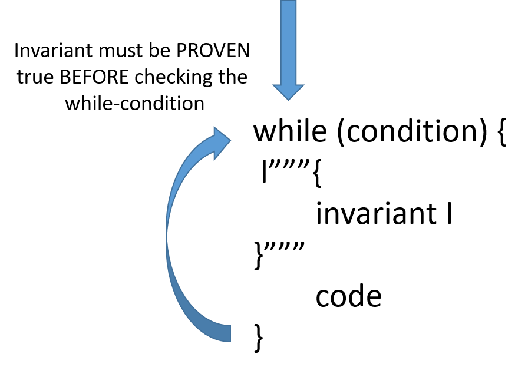

Logika: Programming Logics
6. Loop, Invariants, Induction
6. Loops and Loop Invariants¶
At the end of the last chapter we discussed how a conditional branching creates two “paths” for the logic to flow thru and they are combined in a disjunction after the condition. A loop is a command that restarts itself over and over while the loop condition remains true.
In order to analyze loop behavior we will need to know: what is true before the loop executes, what is done inside the loop and what true after the loop, regardless of how many times the loop executes. At the end of the loop, the conjunction of the negation of the loop-condition and property called the loop-invariant are true.
The loop’s invariant is a statement about what is true before you begin the body of the loop and after iteration of the loop-body. Put another way, the loop-invariant must be true each time you go to check the loop condition; it is true the first time you check to see if you go into the loop, and still still true the last time you check and “skip” the loop.
{kind=link}
6.1. While Loops¶
Consider the factorial n!. We can understand factorial as a repeated
product: for integer n > 0:
n! == 1 * 2 * 3 * ...up to... * n
It is easy to write a loop program that computes the repeated product:
1 2 3 4 5 6 7 8 9 10 11 12 13 14 | import org.sireum.logika._
val n: Z = readInt("Type a nonnegative int: ")
assume( n >= 0)
var i : Z = 0
var fac: Z = 1
while (i < n) {
l"""{
modifies i, fac
}"""
i = i + 1
fac = fac * i
}
|
The loop adjoins the multiplications, *1, *2, *3, etc., to the
running total, fac, until the loop reaches i == n.
Consider some execution cases:
n == 0: the loop repeats 0 times: it computes fac == 1 == 0!
n == 1: the loop repeats 1 time: it computes fac == 1 * 1 == 1!
n == 2: the loop repeats 2 times: it computes fac == (1 * 1) * 2 == 2!
n == 3: the loop repeats 3 times: it computes fac == (1 * 1 * 2) * 3 == 3!
n == 4: the loop repeats 4 times: it computes fac == (1 * 1 * 2 * 3) * 4 == 4!
. . .
the loop repeats k+1 times: it computes fac == (k!) * (k+1) == (k+1)!
For input, n == 4, the loop computes correctly 4! in 4 iterations
because the loop computes correctly 3! in 3 iterations –
the fourth loop iteration builds upon the work of the previous three.
This is the standard use of a loop: each loop iteration builds on the previous
iterations to move one step closer to the final goal.
We should always ask this crucial question about every loop we write:
Say that the loop has been running for some iterations; what has it accomplished so far?
For the factorial example, the response is:
“after i iterations, variable fac has the value, i!, that is,
fac == i!.”
This answer is important, because it reveals the strategy the loop uses to reach
its goal in stages: as i counts upwards towards n, fac == i!
repeatedly holds true.
Because the loop stops when i == n, this means the loop will achieve its
goal: fac == n!.
The answer to the “crucial question” listed above is the loop’s invariant property. Now, why is it an invariant?
This is because the output from the loop’s prior iterations flows into the loop’s next iteration. So, whatever is accomplished looks the same, iteration after iteration after iteration. This is a logical property that can be proved.
Note
Logika Programming fact
A fact statement can be used to introduce global (named) axioms and (pure) proof functions (whose behaviors are specified via axioms) to help with specifying contracts. It is important to note that, as the name implies, Logika treats these axioms as facts–if you make an error in the definition, Logika will dutifully enforce that error everywhere in the program.
1 2 3 4 5 6 7 | import org.sireum.logika._
l"""{
fact // axioms
def factorial(n: Z): Z
fZero. factorial(0) == 1
fPos. ∀x: Z x > 0 → factorial(x) == factorial(x - 1) * x
}"""
|
Lets go through this quickly. In this class, facts will be given to you, you are only expected to know how to use them.
On line 4 we see def factorial(n:Z): Z. This tells you that the fact is
named factorial, it has one named argument n, which is an integer, and
that factorial itself evaluates to an integer (think of this as a return type).
Line 5 is the first rule, fZero. factorial(0) == 1. This rule, used as a
justification, allows you to state factorial(0) == 1 as a claim.
Using this new claim, you can prove additional things through substitution.
Be sure you understand the fPos rule. This is a syntactical form and semantical
meaning you will see often in programming logic.
We deduce the invariant property on the factorial-loop body like this:
1 2 3 4 5 6 7 8 9 10 11 12 13 14 15 16 17 18 19 20 21 22 23 24 25 26 27 28 29 30 31 32 33 34 35 36 37 38 39 40 41 42 43 44 45 46 47 48 49 50 51 52 53 54 55 56 57 58 59 60 61 62 63 64 65 66 67 68 69 70 71 72 73 74 75 76 77 78 79 80 | import org.sireum.logika._
l"""{
fact // axioms
def factorial(n: Z): Z
fZero. factorial(0) = 1
fPos. ∀x: Z x > 0 → factorial(x) = factorial(x - 1) * x
}"""
val n: Z = 3
var i: Z = 0
var fac: Z = 1
l"""{
1. i == 0 premise
2. i >= 0 algebra 1
3. fac == 1 premise
4. factorial(0) == 1 fact fZero
5. factorial(i) == 1 subst2 1 4
6. fac = factorial(i) algebra 3 5
}"""
// begin -- fac == factorial(i)
//first "update"
i = i + 1
l"""{
1. i_old == 0 premise
2. i = i_old + 1 premise
3. i_old >= 0 premise
4. i > 0 algebra 1 2 3
5. fac = factorial(i_old) premise
6. fac = factorial(i-1) algebra 5 2
}"""
fac = fac * i
l"""{
1. fac_old = factorial(i-1) premise
2. fac = fac_old * i premise
3. i > 0 premise
4. ∀x: Z x > 0 → factorial(x) =
factorial(x - 1) * x fact fPos
5. i > 0 → factorial(i) =
factorial(i - 1) * i ∀e 4 i
6. factorial(i) =
factorial(i - 1) * i →e 5 3
7. factorial(i) =
fac_old * i algebra 6 1
8. fac = factorial(i) algebra 7 2
}"""
// End first update -- fac == factorial(i)
//second "update"
i = i + 1
l"""{
1. i_old > 0 premise
2. i = i_old + 1 premise
3. i_old >= 0 premise
4. i > 0 algebra 1 2 3
5. fac = factorial(i_old) premise
6. fac = factorial(i-1) algebra 5 2
}"""
fac = fac * i
l"""{
1. fac_old = factorial(i-1) premise
2. fac = fac_old * i premise
3. i > 0 premise
4. ∀x: Z x > 0 → factorial(x) =
factorial(x - 1) * x fact fPos
5. i > 0 → factorial(i) =
factorial(i - 1) * i ∀e 4 i
6. factorial(i) =
factorial(i - 1) * i →e 5 3
7. factorial(i) =
fac_old * i algebra 6 1
8. fac = factorial(i) algebra 7 2
}"""
// End second update -- fac == factorial(i)
// Third update is exact copy of second
|
This little example is just the loop repeated twice. What we see is both at
the begining and after each update, fac == factorial(i).
Notice how the knowledge generated by completing one iteration “feeds into”
the next iteration.
And, after each iteration, that knowledge is that fac == factorial(i).
A working Logika program would look something like
1 2 3 4 5 6 7 8 9 10 11 12 13 14 15 16 17 18 19 20 21 22 23 24 25 26 27 28 29 30 31 32 33 34 35 36 37 38 39 40 41 42 43 44 45 46 47 48 49 50 51 52 | import org.sireum.logika._
l"""{
fact // axioms
def factorial(n: Z): Z
fZero. factorial(0) == 1
fPos. ∀x: Z x > 0 → factorial(x) == factorial(x - 1) * x
}"""
val n: Z = readInt("Type a nonnegative int: ")
assume( n >= 0)
var i : Z = 0
var fac: Z = 1
l"""{
1. i == 0 premise
2. fac == 1 premise
3. factorial(0) == 1 fact fZero
4. factorial(i) == fac algebra 1 2 3
5. i >= 0 algebra 1
}"""
while (i <= n) {
l"""{
invariant factorial(i) = fac
i >= 0
modifies i, fac
}"""
l"""{
1. factorial(i) == fac premise
}"""
i = i + 1
l"""{
0. i_old >= 0 premise
1. factorial(i_old) == fac premise
2. i = i_old + 1 premise
3. factorial(i - 1) == fac algebra 1 2
4. i > 0 algebra 0 2
}"""
fac = fac * i
l"""{
1. factorial(i - 1) == fac_old premise
2. fac == fac_old * i premise
3. fac == factorial(i - 1) * i algebra 1 2
4. ∀x: Z x > 0 → factorial(x) =
factorial(x - 1) * x fact fPos
5. i>0 → factorial(i) =
factorial(i - 1) * i ∀e 4 i
6. i > 0 premise
7. factorial(i) =
factorial(i - 1) * i →e 5 6
8. fac = factorial(i) algebra 3 7
}"""
}
|
Pay particular attention to lines 17 and 18, where we prove the invariant is true before entering the loop the first time. Similarly, lines 47 and 50 re-establish the invariant before we try to loop again. Thus, we prove the loop invariant holds each time we check the loop-condition and possibly proceed through the loop-body.
Of course, on each loop the loop counter, i, gets larger by one, meaning
that we are closer to achieving the final goal, but the changing values of
fac and i ensure that fac == factorial(i) remains true:
“after i iterations, fac has value factorial(i).”
The invariant property documents the loop’s structure – how the loop achieves its goal.
As exciting as that discussion was, the loop-invariant is a means to an end,
not the end itself. What is it we are trying to achieve? In this example, we
would like to be able to prove that fac == n-factorial. As facts cannot
be used in assertions, what we will really assert is i == n, and then we know
from our invariant that fac == n-factorial. Consider:
1 2 3 4 5 6 7 8 9 10 11 12 13 14 15 16 17 18 19 20 21 22 23 24 25 26 27 28 29 30 31 | import org.sireum.logika._
l"""{
fact // axioms
def factorial(n: Z): Z
fZero. factorial(0) == 1
fPos. ∀x: Z x > 0 → factorial(x) == factorial(x - 1) * x
}"""
// omitting manual proofs through end of loop
val n: Z = readInt("Type a nonnegative int: ")
assume( n >= 0)
var i : Z = 0
var fac: Z = 1
while (i < n) {
l"""{
invariant factorial(i) = fac
i >= 0
modifies i, fac
}"""
i = i + 1
fac = fac * i
}
l"""{
1. ¬ (i < n) premise //negation of loop condition
2. i >= 0 premise // invariant
3. factorial(i) = fac premise // invariant
//. i = n some justification but probably algebra or subst
}"""
assert( i == n)
|
For certain, when the loop quits after i iterations, we know that
the invariant holds.
But we also know that the loop’s test has gone false, that is, ~(i < n),
that is, i >=n. However these facts are not enough to prove i == n.
In this case we say our invariant is too weak, it theoretically admits too many
possibilities.
The solution is to strengthen the invariant, make is so it allows fewer
possibilities after the loop. In particular, we will want to strengthen the
invariant so the only possible value of i is n. We can do this by
adding a condition to the invariant such that values of i > n are not allowed.
1 2 3 4 5 6 7 8 9 10 11 12 13 14 15 16 17 18 19 20 21 22 23 24 25 26 27 28 29 30 31 32 33 | import org.sireum.logika._
l"""{
fact // axioms
def factorial(n: Z): Z
fZero. factorial(0) == 1
fPos. ∀x: Z x > 0 → factorial(x) == factorial(x - 1) * x
}"""
// omitting manual proofs through end of loop
val n: Z = readInt("Type a nonnegative int: ")
assume( n >= 0)
var i : Z = 0
var fac: Z = 1
while (i < n) {
l"""{
invariant factorial(i) = fac
i >= 0
i <= n
modifies i, fac
}"""
i = i + 1
fac = fac * i
}
l"""{
1. ¬ (i < n) premise //negation of loop condition
2. i >= 0 premise // invariant
3. factorial(i) = fac premise // invariant
4. i <= n premise // invariant
5. i >= n algebra 1
6. i = n algebra 4 5
}"""
assert( i == n)
|
The added condition to the invariant at line 18 does the trick. Updating the proof sections so it will verify is left for you as an optional exercise.
Here is a summary of the main points just made:
A loop is a function that repeatedly calls itself. (It is a tail-recursive function.)
The loop’s invariant states a strategy for accomplishing a goal:
the loop has been running for awhile; what has it accomplished so far?
The loop’s invariant is exactly the precondition for executing the loop’s body, and it is exactly the postcondition of what is generated by executing the loop’s body.
When the loop terminates, the falsity of the termination test coupled with the invariant should imply that the loop has achieved its goal.
Even if you forget all about algebra and proofs, whenever you write a loop, document the loop with its invariant stated in words. If you are unable to state in words the invariant, then you don’t understand yourself what your loop is doing.
6.1.1. Law for While-Loops (Claim Transformation)¶
Here is the law we use for deducing the properties of a while-loop.
It uses an invariant assertion, I:
"""{
...
I
}""" // we must prove this True before the loop is entered
// because it must be true before checking B
while (B) {
l"""{
invariant I
modifies VARLIST // the variables updated in C
}"""
l"""{
1. B premise // inside loop, so B must be true
2. I premise // the premises for the loop's body
...
}"""
C
l"""{
...
I // we must prove I at the end of the body
// because it must be true before re-checking B
}"""
} // end loop
l"""{
1. ~B premise
2. I premise
...
}"""
That is, to deduce the knowledge produced by a while-loop (when we do not know
in advance how many times the loop will iterate), we must deduce an invariant
I that:
- is proved true before the first time we check the loop condition
- is proved true at the end of the loop’s body
Then, no matter how many times (0,1,2,…) the loop repeats, we know that I
must hold true when the loop stops.
We also know ~B holds when the loop stops.
{kind=link}
Because the loop will update some variables in its body, we must know these variables’ names, so that any premises other than the loop invariant that enter the loop body that mention these variables are cancelled.
A challenge lies in formulating the appropriate invariant that states what the loop is accomplishing while it repeats. Invariant discovery is an art form; there cannot exist a mechanical algorithm to do this. (This is a key result of computability theory, the study of what problems are mechanically solvable.) So, we now study how to discover loop invariants.
6.2. Examples of Invariant Discovery¶
A key intellectual task in programming is stating a loop’s invariant. The invariant tells us “what the loop is doing” as it iterates – progresses in small steps – towards its goal.
IMPORTANT: Saying what “the loop is doing” is different from saying what the loop “will do” before it starts or what the loop “has done” after it has finished. We must ask the crucial question:
Say that the loop has been running for a while – what has it accomplished so far?
The answer to this question, whether stated in English or algebra, is the invariant, the loop’s true meaning.
Following are some examples of invariant discovery.
6.2.1. Multiplication as Repeated Addition¶
Most people forget that the Greeks and Arabs intended multiplication to be just
repeated addition.
So, what does this program calculate for z when it finishes?
What is the loop’s invariant?
(How does the loop reach its goal?)
1 2 3 4 5 6 7 8 9 10 11 12 13 14 15 16 17 | import org.sireum.logika._
val x: Z = readInt("Type an int: ")
val y: Z = readInt("Type another: ")
var z: Z = 0
var count: Z = 0
while (count != x) {
l"""{
modifies z, count
}"""
println ("(a) x =", x, " y =", y, " count =", count, " z =", z)
z = z + y
count = count + 1
}
println ("(b) x =", x, " y =", y, " count =", count, " z =", z)
assert (x * y == z)
|
Apparently, this program computes x * y and saves it in z.
To understand, we execute a test case and watch what is printed:
Type an int: 3
Type another: 4
(a) x = 3 y = 4 count = 0 z = 0
(a) x = 3 y = 4 count = 1 z = 4
(a) x = 3 y = 4 count = 2 z = 8
(b) x = 3 y = 4 count = 3 z = 12
The trace information in each row shows this pattern between the values of the variables:
count * y == z
This is what the loop is doing — what it means — z holds the value of
count * y.
Because the loop stops when count == x, we conclude that z == x * y.
We can apply logic laws to prove that count * y == z ∧ count <= x is
invariant for the loop’s body:
1 2 3 4 5 6 7 8 9 10 11 12 13 14 15 16 17 18 19 20 21 22 23 24 25 26 27 28 29 30 31 32 33 34 35 36 37 38 39 40 41 42 43 44 45 46 47 48 | import org.sireum.logika._
val x: Z = readInt("Type a positive int: ")
assume(x >=0)
val y: Z = readInt("Type any int : ")
var z: Z = 0
var count: Z = 0
l"""{
1. z == 0 premise
2. count = 0 premise
3. x >= 0 premise
4. z = count * y algebra 1 2
5. count <= x algebra 2 3
}"""
while (count != x) {
l"""{
invariant z = count * y
count <= x
modifies z, count
}"""
println ("(a) x =", x, " y =", y, " count =", count, " z =", z)
z = z + y
l"""{
1. z = z_old + y premise
2. z_old = count * y premise
3. z = y * (count +1) algebra 1 2
}"""
count = count + 1
l"""{
1. z = y * ( count_old +1) premise
2. count = count_old + 1 premise
3. count_old <= x premise
4. count_old != x premise
5. count <= x algebra 2 3 4
6. z = count * y algebra 1 2
}"""
}
l"""{
1. count <= x premise
2. ¬(count != x) premise
3. count = x algebra 1 2
4. z = count * y premise
5. x * y = z algebra 3 4
}"""
println ("(b) x =", x, " y =", y, " count =", count, " z =", z)
assert( x * y == z)
|
6.2.2. Division as Repeated Subtraction¶
Maybe you remember that division was invented to represent repeated subtraction, e.g., “how many times can you subtract 4 from 20? (5) — 4 goes into 20 five times — 20 divided by 4 is 5 (with remainder 0)”.
Here is the program that does repeated subtraction like division is meant to do:
1 2 3 4 5 6 7 8 9 10 11 12 13 14 15 16 17 18 19 20 | import org.sireum.logika._
var n: Z = readInt("Type an nonegative int: ")
var d: Z = readInt("Type a positive int: ")
assume (n >= 0 & d > 0)
var q: Z = 0
var r: Z = n
while (r >= d) {
l"""{
//invariant ???
modifies q, r
}"""
println("(a) n =", n, " d =", d, " q =", q, " r =", r)
q = q + 1
r = r - d
}
assert ( )
print ("(b) n =", n, " d =", d, " q =", q, " r =", r)
print (n, " divided by ", d, " is ", q, " with remainder ", r)
|
Here is a sample execution with trace information printed:
Type an nonegative int: 14
Type a positive int: 3
(a) n = 14 d = 3 q = 0 r = 14
(a) n = 14 d = 3 q = 1 r = 11
(a) n = 14 d = 3 q = 2 r = 8
(a) n = 14 d = 3 q = 3 r = 5
(b) n = 14 d = 3 q = 4 r = 2
14 divided by 3 is 4 with remainder 2
This is a “numbers game”, where we are allowed to use only + and - on
the numbers.
The underlying strategy (invariant) at point (a) is:
l"""{
invariant (d * q) + r == n
modifies q, r
}"""
When the loop quits, that is, when there is no longer enough value in r to
allow yet one more subtraction of q, then the result is exactly the
quotient-remainder that results from dividing n by d. The proof is left
as an exercise.
6.2.3. Averaging Test Scores¶
Even a task like summing scores and computing their average depends on a loop invariant. We will approach this using accumulators for scores and the number of scores.
1 2 3 4 5 6 7 8 9 10 11 12 13 14 15 16 17 18 19 20 21 | import org.sireum.logika._
var acc : Z = 0 // accumulator
var cnt: Z = 0 // number of entered scores
var scr: Z = 0 // value of current entered score
var average: Z = 0
while (s >=0) {
l"""{
invariant ???
modifies acc, cnt, scr
}"""
scr = readInt("Enter score , or -1 to quit")
if (scr >=0 ) {
acc = acc + scr
cnt = cnt + 1
}
}
if (cnt > 0) {
average = acc / cnt
}
print (cnt, " scores were entered with an average of ", average)
|
If we examine the loop at an arbitrary iteration, we see that acc holds the
sum of the value of each previously entered valid score, and cnt contains the
number of valid scores entered.
When a valid score is entered, the “new” value of the accumulator should equal the old value plus the score. At first blush this seems straight forward
acc = acc + scr
l"""{
1. acc = acc_old + scr premise
}"""
But recall that acc_old only has a scope of the proof block following the
assignment. Thus invariant acc = acc_old + scr will not work. We will need
extra variables to explicitly keep track of the previous loop-iteration’s values.
Next we note that “if a valid score is entered ” means we have an implication, so
acc = prevA + scr must be conditioned on s >=0.
The above arguments apply to the count variable as well. This leads to
1 2 3 4 5 6 7 8 9 10 11 12 13 14 15 16 17 18 19 20 21 22 23 24 25 26 27 28 | import org.sireum.logika._
var acc : Z = 0 // accumulator
var pAcc: Z = acc // the accumulator value of previous loop-iteration
var cnt: Z = 0 // number of entered scores
var pCnt: Z = -1 // number of previous entered scores
var scr: Z = 0 // value of current entered score
var average: Z = 0
while (scr >=0) {
l"""{
invariant acc = pAcc + scr ∨ scr < 0
cnt = pCnt + 1 ∨ scr < 0
pCnt > -1 -> cnt >=0
modifies acc, pAcc, cnt, scr, pCnt
}"""
scr = readInt("Enter score , or -1 to quit")
if (scr >=0 ) {
pAcc = acc
acc = acc + scr
pCnt = cnt
cnt = cnt + 1
}
}
if (pCnt > -1) {
cnt = cnt + 1
average = acc / cnt
}
print (cnt, " scores were entered with an average of ", average)
|
The proof is left as an exercise.
6.2.4. Squaring an Array’s Numbers¶
Say that a is a sequence of ints, and say we write a loop that squares each of
a’s elements and stores the information in sequence b:
1 2 3 4 5 6 7 8 9 10 11 12 13 14 15 | import org.sireum.logika._
var a : ZS = ZS(5, 10, 15, 20)
var b: ZS = a.clone // creates in b as a copy of a
var i : Z = 0
while (i != a.size) {
l"""{
invariant ???
modifies i, b
}"""
b(i) = a(i)*a(i)
i = i + 1
}
println (a)
println(b)
|
In words, the loop’s invariant is that
while the loop is running,b’s elements, from 0 up toi, are the square ofa’s, and the rest are unchanged.
We express this using the logical operator forall (∀).
First we will want to capture the idea that everything before i in sequence
b has been changed by the loop. This is expressed by line 1 below.
1 2 3 | ∀j:Z ( 0<= j ∧ j< i) → (b(j) == (a(j) * a(j)))
∀j:Z ( i<= j ∧ j< b.size) → (b(j) == a(j) )
b.size = a.size
|
Lines 2 and 3 express what has not been changed by the loop. All indices i and
above still equal a, and the sizes of the 2 sequences are the same.
For all j in the range from 0 to
i-1, b(j)== a(j) * a(j); for all j in the range, i to
b.size - 1, b(j) == a (j); and we ensure the size of the arrays match.
This last statement is key, and we will see why in a moment.
This indicates clearly that sequence b is split into toe segments: one whose
elements are the square of a and one whose elements are not yet altered.
When the loop quits, it is because i == b.size.
In this situation, the range from i to b.size-1 is empty – all the
array’s elements are squared.
Please note, a working invariant in Logika will require more than this key idea. Here is a program that with an set of claims for the invariant which produces the desired behavior. Below we’ll discuss why the “extra” claims are necessary.
1 2 3 4 5 6 7 8 9 10 11 12 13 14 15 16 17 18 19 | import org.sireum.logika._
var a : ZS = ZS(5, 10, 15, 20)
var b: ZS = a.clone
var i : Z = 0
while (i != b.size) {
l"""{
invariant i >= 0
i <= b.size
a.size = b.size
//∀j:Z ( 0<= j ∧ j< i) → (b(j) == (a(j) * a(j))) equal to line 12
∀x: (0 ..< i) (b(x) == a(x)* a(x))
∀x: (i ..< b.size) (b(x) == a(x))
modifies i, b
}"""
b(i) = a(i)*a(i)
i = i + 1
}
println (a)
|
Logika will throw an error it we do not prove that all sequence-indexing operations
will be inside the sequent itseld. Lets cover the potential of index-out-of-bounds
errors in b first. Lines 8 and 9 ensure that at the start of every
loop-iteration, the variable i lies inside the indices of b.
Specifically, line 16 will not throw an
index-out-of-bounds error for sequence b.
However, Logika knows the loop modifies b; so the invariant must account
for the possibility of adding or deleting elements in b, i.e changing its size.
The invariant a.size = b.size on line 10 enforces a rule that b
is always the size of a at the start of every iteration, so line 16
will never get an index-out-of-bounds error from a.
Line 10 also helps us prove our goal. Because the loop does not modify a, and
b is always the same size as a,
∀j:Z ( 0<= j ∧ j< b.size) → (b(j) == (a(j) * a(j))) is true at the end of
the loop. If b were
allowed to be smaller or bigger than a, indices in on sequence, but not the
other, would either throw an error or be ignored. That is not the behavior we
want. The proof is left as an exercise.
6.3. Logika Solution Modes¶
Up to now, we have been running Logika in “manual mode”
{kind=link}
We are now reaching the point where additional practice in manual mode may no longer be a learning activity, and where the proof-blocks after claim transformations can become dozens of lines long. Logika offers two advanced modes which we periodically use to reduce the number and length of required proof-blocks
6.3.1. Auto-mode¶
This mode enables you to use auto in lieu of normal justification statements.
Consider the final proof for Multiplication as Repeated addition. In manual
mode it required roughly 50 lines to complete. In Auto mode
1 2 3 4 5 6 7 8 9 10 11 12 13 14 15 16 17 18 19 20 21 22 23 24 25 26 27 28 29 | import org.sireum.logika._
val x: Z = readInt("Type a positive int: ")
assume(x >=0)
val y: Z = readInt("Type any int : ")
var z: Z = 0
var count: Z = 0
while (count != x) {
l"""{
invariant z = count * y
count <= x
modifies z, count
}"""
println ("(a) x =", x, " y =", y, " count =", count, " z =", z)
z = z + y
l"""{
3. z = y * (count +1) auto
}"""
count = count + 1
l"""{
5. count <= x auto
6. z = count * y auto
}"""
}
println ("(b) x =", x, " y =", y, " count =", count, " z =", z)
assert( x * y == z)
|
it requires fewer than 30 lines. This brevity is achieved with some loss of human readability. Why some manual proof lines can be omitted or why some auto proof-blocks and lines are required may not be intuitively obvious.
6.3.2. Symexe-mode¶
Even more powerful is Symexe mode. This mode allows you to reason about your program based on invariants and method pre-, post- and frame conditions.
{kind=link}
It reduces the multiplication problem to roughly 20 lines
1 2 3 4 5 6 7 8 9 10 11 12 13 14 15 16 17 18 19 20 21 22 | import org.sireum.logika._
val x: Z = readInt("Type a positive int: ")
assume(x >=0)
val y: Z = readInt("Type any int : ")
var z: Z = 0
var count: Z = 0
while (count != x) {
l"""{
invariant z = count * y
count <= x
modifies z, count
}"""
println ("(a) x =", x, " y =", y, " count =", count, " z =", z)
z = z + y
count = count + 1
}
println ("(b) x =", x, " y =", y, " count =", count, " z =", z)
assert( x * y == z)
|
6.3.3. Pitfalls of Auto and Symexe¶
When using these more advanced modes, it is not always obvious why Logika will not verify. Sometimes semantic errors in the program keep it from verifying; i.e. Logika has found a corner or edge case for which the program does not account. Other times the invariants and conditions do not actually prove the goal. Inevitably, sometimes it will be both.
In either case an option is to turn off “Auto” and begin typing each proof-block as if in manual mode (this can be done with Symexe enabled) until you find the logical or programming error.
6.4. Loop Termination and Total Correctness¶
THIS AREA BEING REFURBISHED FOR YOUR FUTURE ENJOYMENT

This image is licensed under a Creative Commons Attribution-NonCommercial 2.5 License. https://xkcd.com/1724/
6.5. Sequences and the use of Universal and Existential Assertions¶
Computer scientists and other programmers often need to express some truths (propositions) about all elements in a collection or sequence of objects.
6.5.1. Sequences¶
In this course, we use only on type of sequence, an ordered list. The general rules for applying logic to collections can be abstracted from these examples and applied to different types of collections as needed.
As the name implies, there are no “NULL” or gaps in a sequence. However it is
possible to make an empty sequence (var b : ZS = ZS()).
Types and Constructors¶
In class we deal with two types of lists, lists of integers and lists of booleans.
type Description constructor ZS List of integers var <var_name>: ZS = ZS (<int, int, …>) BS List of booleans var <var_name>: BS = BS (<bool, bool, ..>)
The version of Logika we use does not support sequences of sequences.
Operations and Properties¶
Given var a: ZS = ZS(1,2,3). a = [1,2,3]
Indexing a(Z) Sequences are index from 0. Logika will show an error if you have not proven that a variable used for indexing does not lie within the sequence’s range.
a(0)= 1a.size Sequences have a property providing their number of elements.
a.size == 3Append :+ Sequences can have a value appended to their end.
a = a:+(4) // a == [1, 2, 3, 4]Prepend +: Sequences can have a value prepended to their front.
a= (0)+:a // a = [ 0, 1, 2, 3]Reassignment Sequences instantiated as var can be reassigned. This appears to be the only way to “shrink” a sequence.
a = ZS(5,6) // a = [ 5, 6]
- var b: ZS =
- a.clone
Creates an exact copy of a for b. Dirrect assignment b = a, is not permitted
Law for Sequence Element Assignment (Claim Transformation)¶
To assign a value to an element i of a sequence a is very similar to
the assignment of non-sequence element.
l"""{
prove :
0 <= i // must be stated with 0 on LHS
i < a.size
P // other claims involving a(i)
}"""
a(e1) = e2 // expr is type of sequence
l"""{
1. [a_old/a] P premise
2. a.size = a_old.size premise
3. a([a_old/a]e1) = [a_old/a]e2 premise
// what changed in the sequence
4. ∀i: (0 .. < a.size)
(i != [a_old/a]e1) →
a(i)==a_old(i) premise
// what did not change in the sequence
}"""
in the Logika-proof block immediately following a sequence element assignment, Logika creates a local “sequence_old” for reference. A concrete Logika example (solved in auto mode) of this law is below:
1 2 3 4 5 6 7 8 9 10 11 12 13 14 15 16 17 18 19 20 21 22 | import org.sireum.logika._
var s: ZS = ZS (0,1,2,3,4,5,6,7,8,9)
val j: Z = s(2) // e1 = s(2)
l"""{
1. j == s(2) premise
2. s(2) == 2 auto
3. s.size = 10 premise
20. 0 <= j algebra 1 2 // 0 <= e1
21. j < s.size algebra 1 3 2 // e1 < a.size
22. s(j) < 5 algebra 1 2 // P
}"""
s(j) = s(j) + 1 // e2 = s(j) + 1
l"""{
1. s_old(j) < 5 premise // P
2. s_old(j) = 2 premise // P
3. s.size = s_old.size premise // a.size = a_old.size
4. s(s_old(2)) = s_old(j) +1 premise // a([a_old/a]e1)= [a_old/a]e2
5. ∀i: (0 .. < s.size) // ∀i: (0 .. < a.size)
(i != s_old(2)) → // (i != [a_old/a]e1) →
s(i)==s_old(i) premise // a(i)==a_old(i)
}"""
|
Note the use of auto on line 2. This eliminates roughly a dozen lines of
claim manipulations. Proving an element in a sequence, created by ZS(1,2,...)
is equal to a value is a laborious process in manual mode.
6.5.2. Use of Quantifiers¶
The basic form of specifying some claim P(a(x)) holds for every member of the
sequence a are
∀<var-name>: <var-type> ( lower-bound ∧ upper-bound) → P(a(x))
∀<var-name>( lower-bound .. upper-bound) P(a(x)) // shorthand version
Where the lower- and upper-bounds are inclusive statements about where to start
and end looking through the sequence. For example
∀x: Z ( x>=0 ∧ x < a.size) → P(a(x)) would check every member of a to
see that P(a(x)) holds where as
∀x: Z ( 0 .. < (a.size/ 2)) P(a(x)) would check the first half.
Logika will verify ∀, if and only if P(a(x)) is proven true for every a(x) in the range.
Similarly, the forms for there exist are
∃<var-name>: <var-type> ( lower-bound ∧ upper-bound) → P(a(x))
∃<var-name>( lower-bound .. upper-bound) P(a(x))
Of course in this case at least 1 member of a(x) in the checked range must satisfy P(a(x)) for Logika to verify.
Note
Best Practice for Sequences
It is best, when modifying a sequence in a loop (or function), to always specify what changes and what remains the same, including the size of the sequence. Failure to do so may lead to sound, but incomplete proofs. If you have no errors, Logika will verify sound but incompletely specified proofs.
6.6. Summary¶
The law for while-loops is
"""{ ... I }"""
while B :
"""
{ invariant I
modifies VARLIST (those variables updated in C) }
"""
"""
{ 1. B premise
2. I premise
... }
"""
C
"""{ ... I }"""
"""
{ 1. ~B premise
2. I premise
... }
"""
This note was adapted from David Schmidt's CIS 301, 2008, Chapter 4 course note.
It was updated in 2018 by Dr John Hatcliff and George Lavezzi
to conform with Logika syntax and more closely match
KSU's CIS 301 course as taught in Spring 2018.